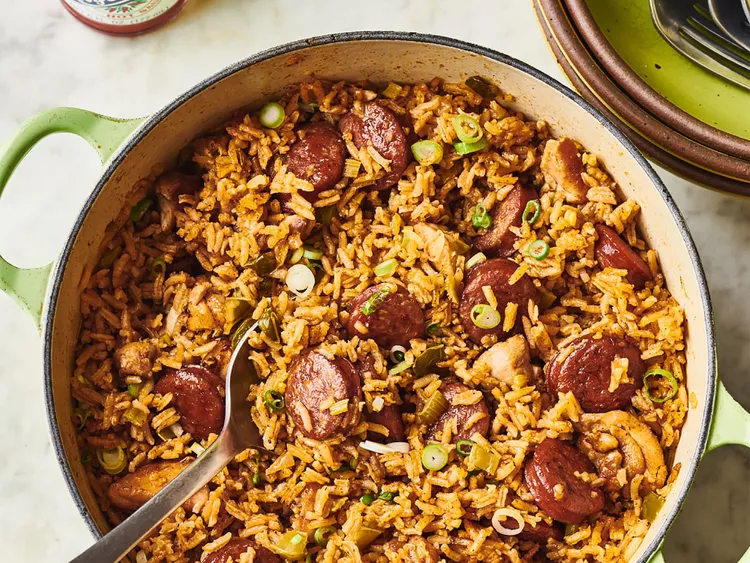

Jambalaya Recipe

Description
Jambalaya is a one-pot cajun dish made with rice, meat and/or seafood, and vegetables.
Though traditionally made with andouille sausage, chicken, shrimp, and crawfish;
this recipe can be made with any combination of these meats and seafoods.
Ingredients
- 2 tablespoons peanut oil, divided
- 1 tablespoon Cajun seasoning
- 10 ounces andouille sausage, sliced into 1/2 inch pieces
- 1 pound boneless skinless chicken breasts, cut into 1 inch pieces
- 1 onion, diced
- 1 small green bell pepper, diced
- 2 stalks celery, diced
- 3 cloves garlic, minced
- 1 (16 ounce) can crushed italian tomatoes
- 1/2 teaspoon red pepper flakes
- 1/2 teaspoon ground black pepper
- 1 teaspoon salt
- 1/2 teaspoon hot pepper sauce
- 2 teaspoons Worcestershire sauce
- 1 teaspoon filé powder
- 1 1/4 cups uncooked white rice
- 2 1/2 cups chicken broth
- Gather all ingredients.
- Heat 1 tablespoon of peanut oil in a large heavy Dutch oven over medium heat.
Season the sausage and chicken pieces with Cajun seasoning. Sauté sausage until browned.
Remove with slotted spoon, and set aside.
- Add 1 tablespoon peanut oil, and sauté chicken pieces until lightly browned on all sides.
Remove with a slotted spoon, and set aside.
- In the same pot, saute onion, bell pepper, celery, and garlic until tender.
- Stir in crushed tomatoes, and season with red pepper, black pepper, salt, hot pepper sauce,
Worcestershire sauce, and filé powder.
- Stir in chicken and sausage. Cook for 10 minutes, stirring occasionally.
- Stir in the rice and chicken broth.
- Bring to a boil, reduce heat, and simmer for 20 to 25 minutes, or until liquid is absorbed.
- Serve and enjoy!